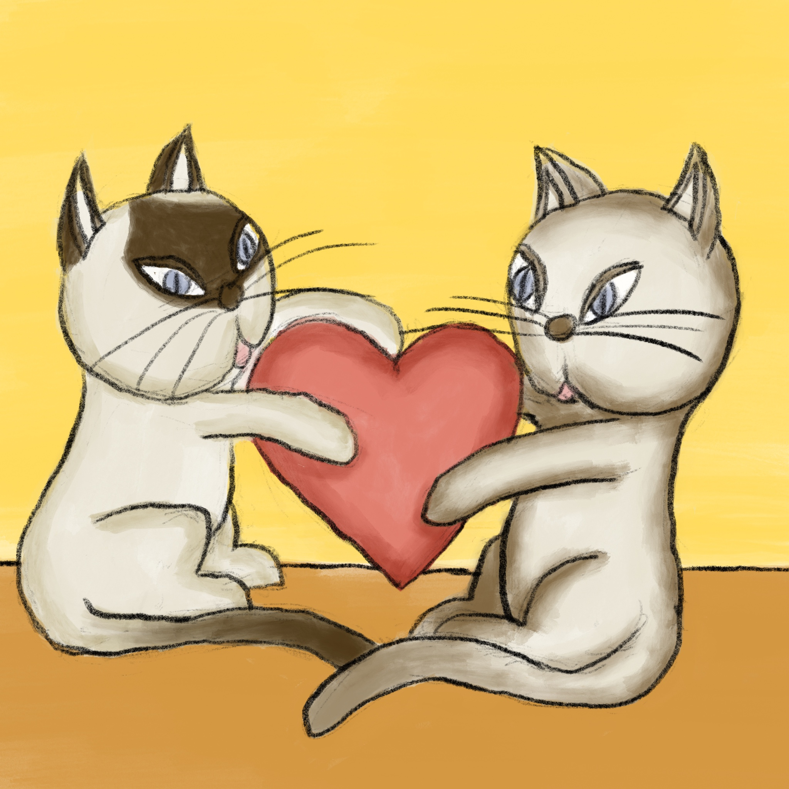
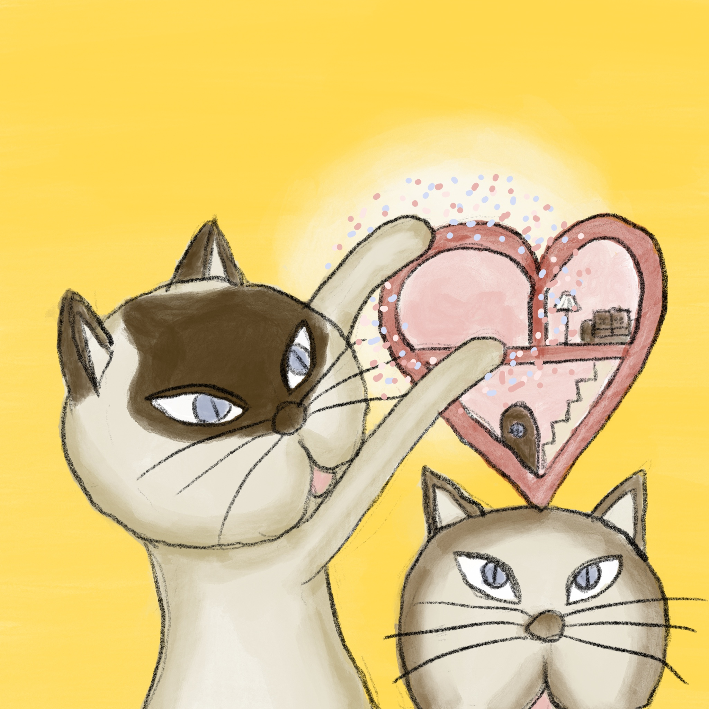

“Ah, to influence what you are watching,” Cooksie started, “is much more difficult,” Mr. Peanut completed. “First you must find the source of that sadness.” “And to see that source,” Cooksie continued, “you must understand that there are forces pulling at your heart…” “…and creating a space inside,” Peanut interrupted, as the two pulled at a heart pillow to demonstrate. #43
“You mean there’s a gap in my heart and I need to find out what it is? I already knew that!” The bear gruffed and puffed, imagining the hole in his heart and getting frustrated again. "And what about these forces pulling at my heart? They sound dangerous!" #44

“Perhaps it is a gap, perhaps it is just a room in your heart you have not yet furnished,” Cooksie said, and as he spoke the heart pillow opened up into a little house, where an empty room appeared surrounded by a sparkly glow. “The heart does not have holes, per se, but rather absences, of what was once or what is yet to be,” Mr. Peanut broke in, “and those forces will not tear your heart apart.” “The heart is a muscle; it can grow,” Cooksie said, completing the thought. #45